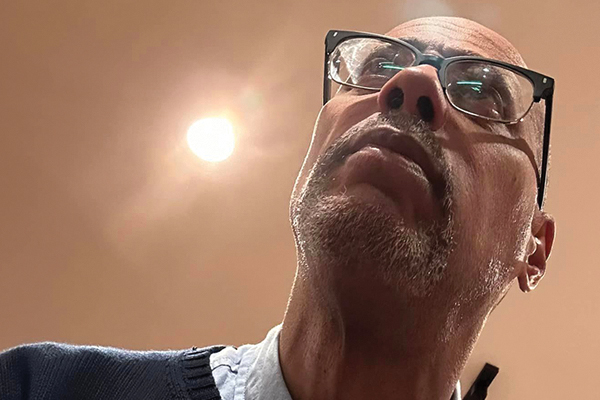

Just a Guy Named Dave!
Inky Stories is a web and print anthology of short, self-contained comic book stories by Dave Marshall, self-published through Rotten Kid Press. Genres include autobio, comedy, satire, horror, romance, sci-fi, historical drama, action, and crime fiction. Unless otherwise noted, Dave is the sole creator (writer, artist, colorist, letterer, designer, etc.).

Dave Marshall is a comic book creator published by Fantagraphics Books, SpiderBaby Graphix, FantaCo Enterprises, and Boston Comics Roundtable. He recently finished a project "in the worlds of Doctor Who" for Cutaway Comics. He's an in-demand panelist for various sci-fi geek conventions. Dave also teaches Art of the Comic Book, a college-level studio course on making and developing visually narrative art.
His storytelling leans more towards naturalism, using backgrounds and body language as character. He's obsessed with expressing the look and feel of offset printing (hand lettering, Ben Day screens, worn paper and ink textures) with modern digital tools.
Born and raised in Springfield Massachusetts, Dave made his artistic debut at four creating Superman from a lump of children's clay. Trying to get the emblem right twice (front chest and back of cape) drove him to full blown toddler rage.
That hyper focused attention to detail would be a lifelong blessing. In later years he discovered Silver and Bronze age superhero comics. His favorite artists at the time were Jack Kirby, Steve Ditko, Wally Wood, and John Buscema. Operating under the influence of Pop-Tarts and How to Draw Comics the Marvel Way, he began making comic book art with professional tools.
The process led him to art school, where studying comics art & technology history exposed him to early 20th century artists (George Herriman, June Tarpe Mills, Gladys Parker), underground comix (R. Crumb, Trina Robbins, Eric Stanton), and masters of the middle and later century (Alex Toth, Los Bros. Hernandez, Howard Chaykin, Jill Thompson, Dan DeCarlo). The learning still hasn't stopped.
As they say, the best is yet to come.
Dave M!, giving you all I’ve got.